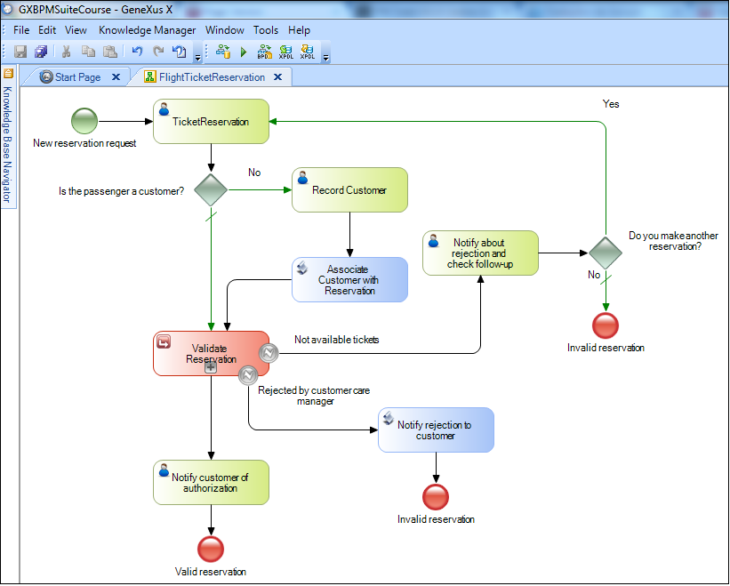
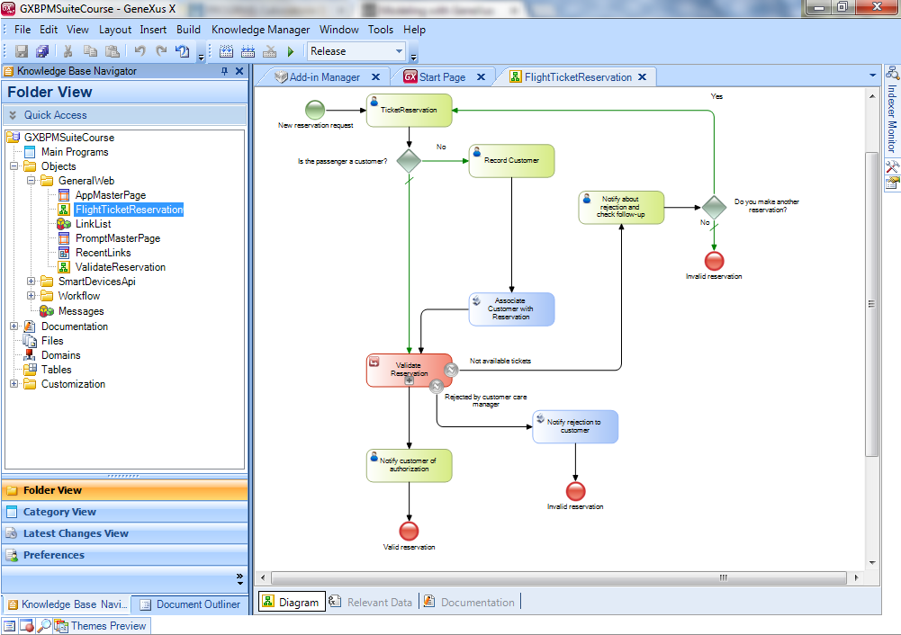

GeneXus provides two ways for modeling business processes following de BPMN standard, such as the GeneXus Business Process Modeler and the Business Process Diagram Object object, which is integrated into the GeneXus development environment. Business Process ModelerGeneXus Business Process Modeler is a free and standalone tool for modeling business processes, based on the BPMN modeling standard. It is useful in the initial stage of a project where a tool is required for capitalizing the knowledge of the organization’s business and for documenting and formalizing it so that it may be automated later. It’s oriented at users with a business process analyst profile, however, it is not a requirement for them to have a technical profile. A typical BPModeler window is the following:  To start working with the GXBPModeler, you can see the following How To: Creating an empty BPD using the Business Process Modeler or Getting Started: Modeling a business process article.
Business Process DiagramA Business Process Diagram is a GeneXus object, thus, you use the GeneXus IDE to create it and make a process diagram by dragging BPMN symbols from the Toolbox.  Alternatively, you can also drag some GeneXus objects from the Folder View directly to the diagram. Once the diagram is created, you could associate GeneXus objects to the diagram symbols, converting the diagram in a functional application. This process is called Model Automation. To see a practical example on how to create a BPM application see: My first BPM Application
|
| Backlinks |
| Toc:GeneXus BPM Suite |